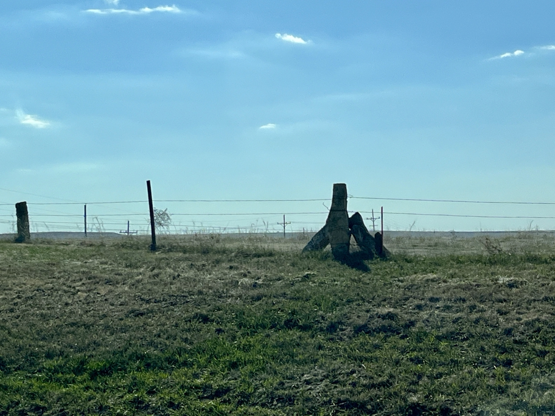

North central Kansas has so few trees that its settlers used rock for fenceposts. Corner posts are braced by two diagonals. Once one notices Kansas limestone, it's everywhere: the Garden of Eden is built of it, as are historic buildings in Wilson and Dodge City (coming up) and the Stonehenge-esque signs that welcomed us to several towns including Lebanon.
Kansas Lucas